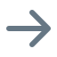

林知夏
点击头像进入个人中心
期末考试周进行中
合理规划时间，稳住节奏，我们能赢。
查看复习计划

课程表
3
待办任务
校园通知
学习陪伴
AI 导员
今日课程
查看全部 ›
下一节
数据结构
10:00 · 进行中
C-202 · 李老师
高等数学
08:00 · B-301
已结束
计算机网络
14:00 · A-105
未开始
学习总览
本周进度
72%
较上周
↑12%
近期截止
更多 ›
《数据结构》作业三：链表与栈
今天 23:59
《高等数学》习题课报告提交